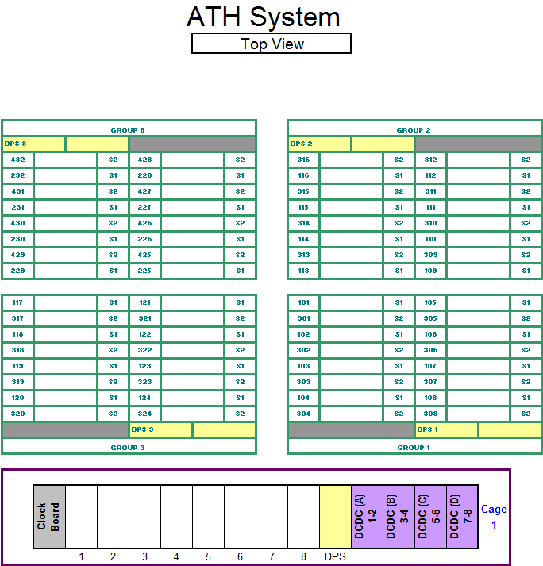
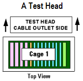
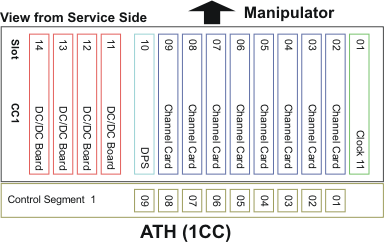

DUT interface layout - A-Test Head
This topic shows the DUT interface layout for the A-Test head of V93000 Pin Scale and Smart Scale systems.


Below is the mapping of control segment slot numbers to actual channel board numbers (view from service side):

Functional changes
- Introduced in SmarTest 7.1.4